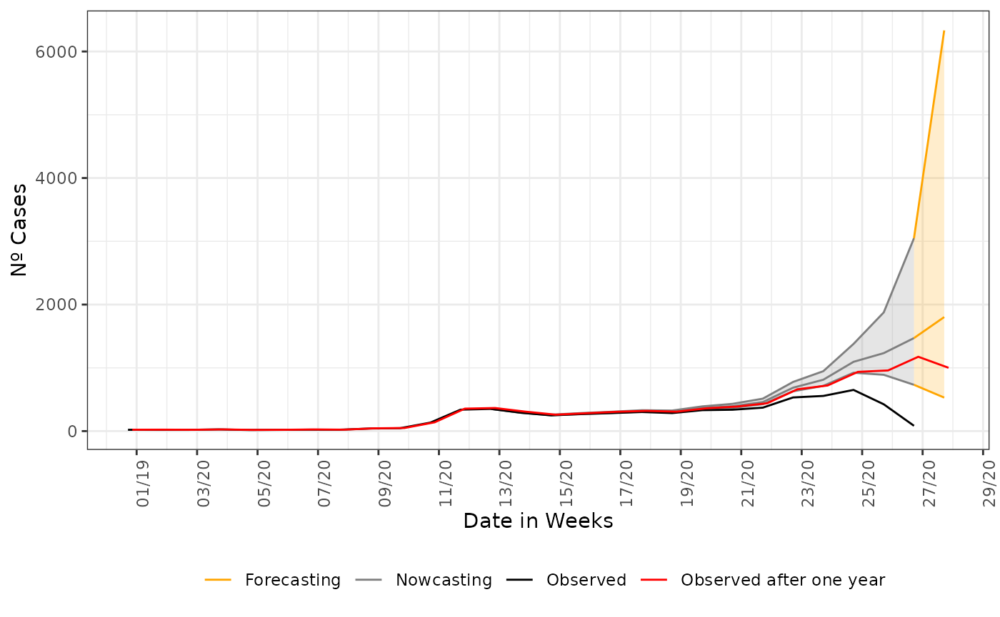
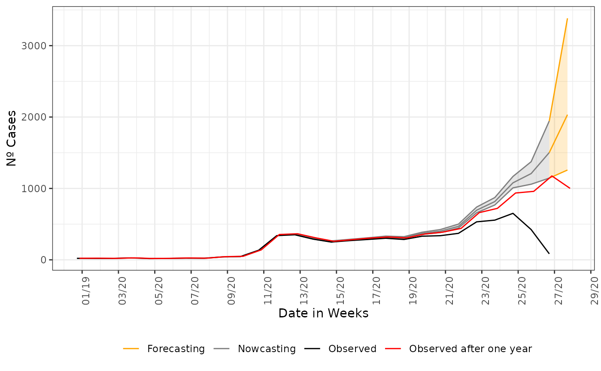

Beyond Nowcasting, Forecasting
Rafael Lopes & Leonardo Bastos
Source:vignettes/articles/3_forecasting.Rmd
3_forecasting.RmdTLDR
After having learned how nowcasting works, we add unobserved dates to our delay triangle and forecasting, i.e., project the number of cases beyond the data already observed.
Forecasting
Nowcasting is the estimation of the events that have already started but not yet reported. In epidemiology, the events as cases of an infectious disease that has onset its first symptoms but is not yet captured from the notification system. Forecasting is simply the estimation of the events that have not yet started their onset of first symptoms, i.e., cases that are in a probable incubation period. From the data structure that any database has is the cases that have a date of onset greater than present date. In the language of delay triangle, forecasting will only be to estimate the part that is completely unobserved.
Parameter K > 0
The nowcasting_inla function has a functional parameter
that flags to the model parsed to inla to construct the
delay triangle with dates greater than the present date. This is done by
the setting the K parameter to a value greater than 0, like
.
We proceed as in any other example of nowcasting. We will be forecasting as
was done for nowcasting in the article Nowcasting
for decision making.
First, we cut the lazy data loaded with the namespace of the package
to a date of interest. For more details on why we cut on this date, see the
article Nowcasting
for decision making. And after this we parse to the
nowcasting_inla function returns the date of onset and date of
report columns, a flag for returning a data.frame with the case counts
by week and setting the K parameter to a desired
forecasting horizon, here we forecast one week ahead of the present
date.
Before forecasting, we construct the case counts curve from the lazy
data, by using the internal function data.w_no_age, we
construct the curve by summarizing the case counts by each date of onset
of the first symptoms present in the database.
library(tidyverse)
library(lubridate)
library(nowcaster)
## To see Nowcasting as if we were on the verge of a rise in the curve
data("sragBH")
srag_now <- sragBH |>
filter(DT_DIGITA <= "2020-07-04")
data_by_week <- data.w_no_age(dataset = srag_now,
date_onset = DT_SIN_PRI,
date_report = DT_DIGITA,
K = 0) |>
group_by(date_onset) |>
tally()
data_by_week |>
ggplot(aes(x = date_onset,
y = n))+
geom_line()+
theme_bw()+
labs(x = 'Date of onset of symptons',
y = 'Nº Cases')+
scale_color_manual(values = c('grey50', 'black'),
name = '')+
scale_x_date(date_breaks = '2 weeks',
date_labels = '%V/%y',
name = 'Date in Weeks')
Now, to forecast one week ahead, we just flag the K = 1,
and proceed as in normal nowcasting calling, the code is:
nowcasting_bh_no_age <- nowcasting_inla(dataset = srag_now,
date_onset = DT_SIN_PRI,
date_report = DT_DIGITA,
data.by.week = T,
K = 1)
head(nowcasting_bh_no_age$data)
#> # A tibble: 6 × 4
#> dt_event delay Y Time
#> <date> <dbl> <dbl> <int>
#> 1 2019-12-28 0 1 1
#> 2 2019-12-28 1 2 1
#> 3 2019-12-28 2 4 1
#> 4 2019-12-28 3 5 1
#> 5 2019-12-28 4 2 1
#> 6 2019-12-28 5 2 1To visualize the forecast, we plot the observed curve and the nowcasting and forecasting estimate, change the colors for each part. We plot together the nowcasting and forecasting estimates, the curve observed one year later, to validate the estimate made.
## Nowcasting estimate filtering
nowcasting_estimate<-nowcasting_bh_no_age$total |>
filter(dt_event <= "2020-06-27")
## Forecasting estimate filtering
forecasting_estimate<-nowcasting_bh_no_age$total |>
filter(dt_event >= "2020-06-27")
## One year after observed
data_one_year_after<-sragBH %>%
filter(DT_SIN_PRI <= "2020-07-11") %>%
mutate(
D_SIN_PRI_2 = DT_SIN_PRI - as.numeric(format(DT_SIN_PRI, "%w"))
) %>%
group_by(D_SIN_PRI_2) %>%
tally()
## Plotting
nowcasting_estimate |>
ggplot(aes(x = dt_event, y = Median, col = "Nowcasting"))+
geom_line()+
geom_ribbon(aes(ymin = LI, ymax = LS, col = "Nowcasting", fill = "Nowcasting"),
alpha = 0.2,
show.legend = F)+
geom_line(data = forecasting_estimate,
aes(x = dt_event, y = Median, col = "Forecasting"))+
geom_ribbon(data = forecasting_estimate,
aes(ymin = LI, ymax = LS, col = "Forecasting", fill = "Forecasting"),
alpha = 0.2,
show.legend = F)+
geom_line(data = data_by_week,
aes(date_onset, y = n, col = 'Observed'))+
geom_line(data = data_one_year_after,
mapping = aes(x = D_SIN_PRI_2, y = n,
color = "Observed after one year")) +
theme_bw() +
theme(legend.position = "bottom",
axis.text.x = element_text(angle = 90)) +
scale_color_manual(values = c('orange','grey50', 'black', 'red'),
name = '')+
scale_fill_manual(values = c('orange','grey50'),
name = '')+
scale_x_date(date_breaks = '2 weeks',
date_labels = '%V/%y',
name = 'Date in Weeks')+
labs(x = '',
y = 'Nº Cases')
Uncertainty grows
As we try to forecasting longer ahead of the present date, the uncertainty has to grow. This is seen by the opening of the confidence intervals on the last graph. Although it is wide, the realized curve still falls inside it, indicating that it is assertive of the tendency of the curve at least. This can be taken to support decision-making when planning ahead of the present date. To any other forecasting horizon further than 1 week ahead, the confidence interval will be wider than this, to help a little, we can try forecasting with an imposed structured on the data. Now, we forecasting the parsing of the columns for age to the nowcasting function, this can reduce the opening of the confidence interval.
nowcasting_bh_age <- nowcasting_inla(dataset = srag_now,
date_onset = DT_SIN_PRI,
date_report = DT_DIGITA,
data.by.week = T,
K = 1,
age_col = Idade)
head(nowcasting_bh_age$data)
#> # A tibble: 6 × 5
#> dt_event delay fx_etaria Y Time
#> <date> <dbl> <fct> <dbl> <int>
#> 1 2019-12-28 0 1 0 1
#> 2 2019-12-28 0 2 0 1
#> 3 2019-12-28 0 3 0 1
#> 4 2019-12-28 0 4 0 1
#> 5 2019-12-28 0 5 0 1
#> 6 2019-12-28 0 6 0 1And we plot the nowcasting estimate and forecasting estimate again:
## Nowcasting estimate filtering
nowcasting_estimate<-nowcasting_bh_age$total |>
filter(dt_event <= "2020-06-27")
## Forecasting estimate filtering
forecasting_estimate<-nowcasting_bh_age$total |>
filter(dt_event >= "2020-06-27")
## Plotting
nowcasting_estimate |>
ggplot(aes(x = dt_event, y = Median, col = "Nowcasting"))+
geom_line()+
geom_ribbon(aes(ymin = LI, ymax = LS, col = "Nowcasting", fill = "Nowcasting"),
alpha = 0.2,
show.legend = F)+
geom_line(data = forecasting_estimate,
aes(x = dt_event, y = Median, col = "Forecasting"))+
geom_ribbon(data = forecasting_estimate,
aes(ymin = LI, ymax = LS, col = "Forecasting", fill = "Forecasting"),
alpha = 0.2,
show.legend = F)+
geom_line(data = data_by_week,
aes(date_onset, y = n, col = 'Observed'))+
geom_line(data = data_one_year_after,
mapping = aes(x = D_SIN_PRI_2, y = n,
color = "Observed after one year")) +
theme_bw() +
theme(legend.position = "bottom",
axis.text.x = element_text(angle = 90)) +
scale_color_manual(values = c('orange','grey50', 'black', 'red'),
name = '')+
scale_fill_manual(values = c('orange','grey50'),
name = '')+
scale_x_date(date_breaks = '2 weeks',
date_labels = '%V/%y',
name = 'Date in Weeks')+
labs(x = '',
y = 'Nº Cases')
Conclusion
In this vignette, we explored the forecasting estimates that the model
can produces. We have add the K parameter different than 0
meaning we want an estimate that goes beyond the partial unobserved
data. We further compared forecasting produced considering age class as
another predictor, as explored on the Nowcasting
on Structured data, we fit a model to each of the age classes
present on the data but now we make use of K equals to 1,
meaning to add a line of completely unobserved dates to the delay
triangle.